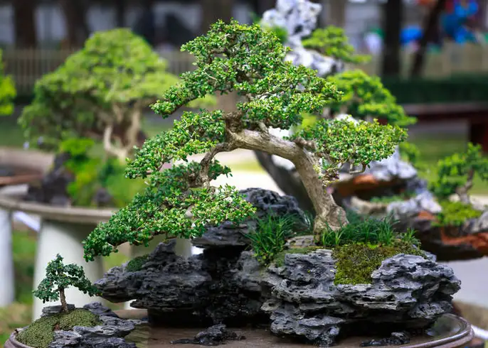
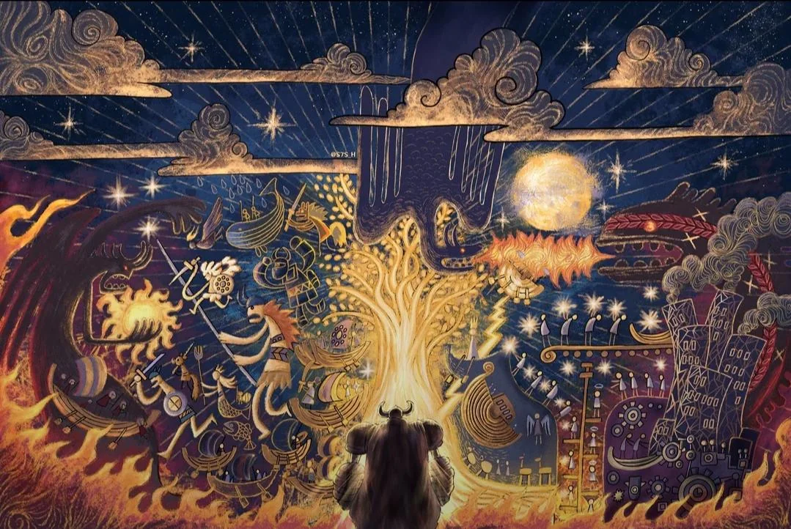
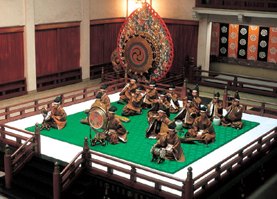
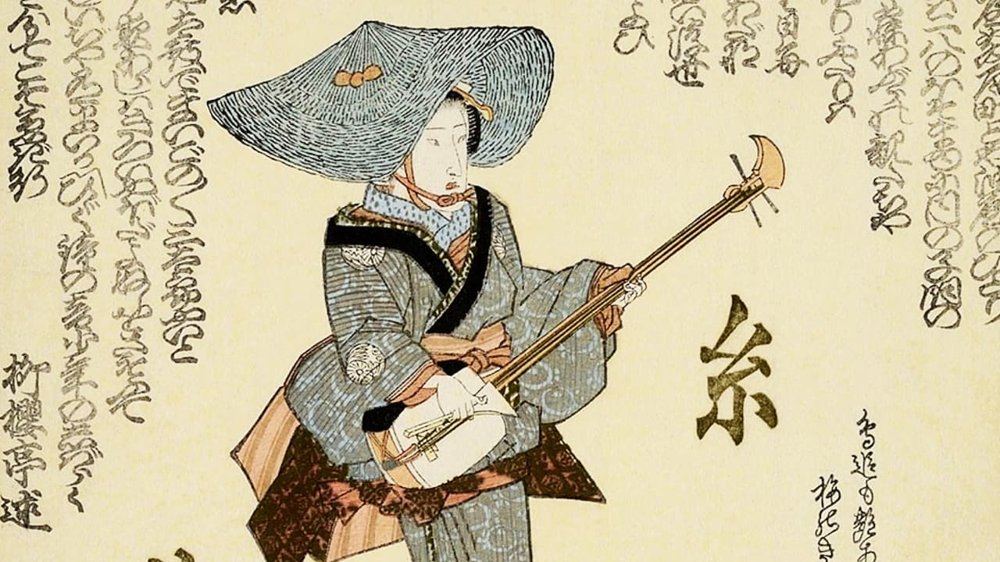
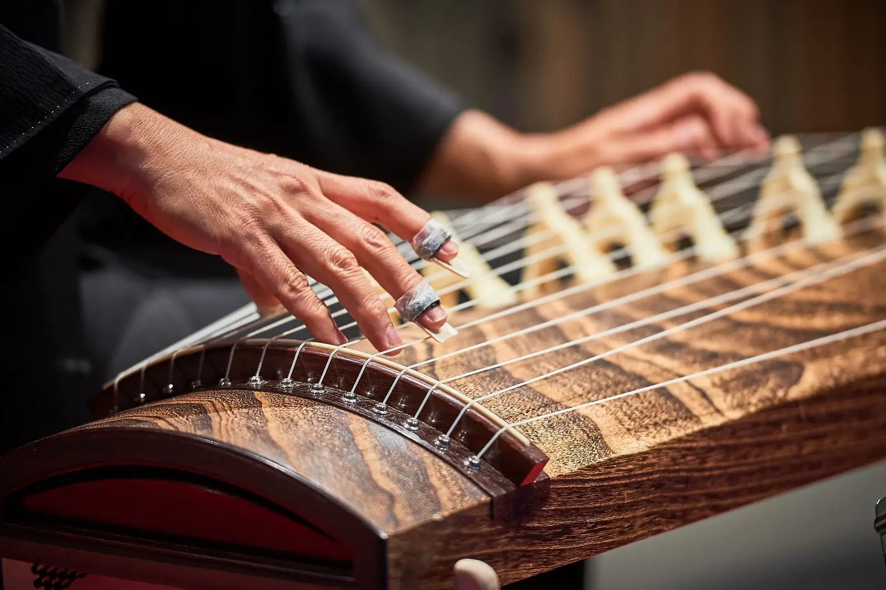
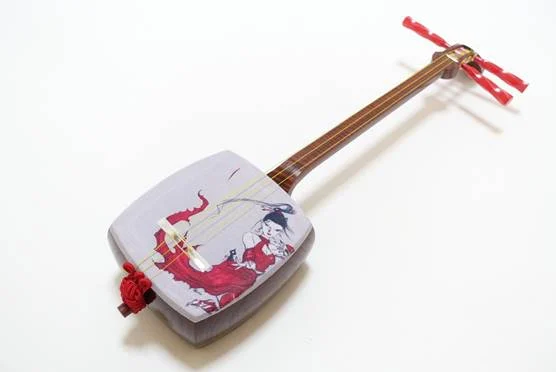
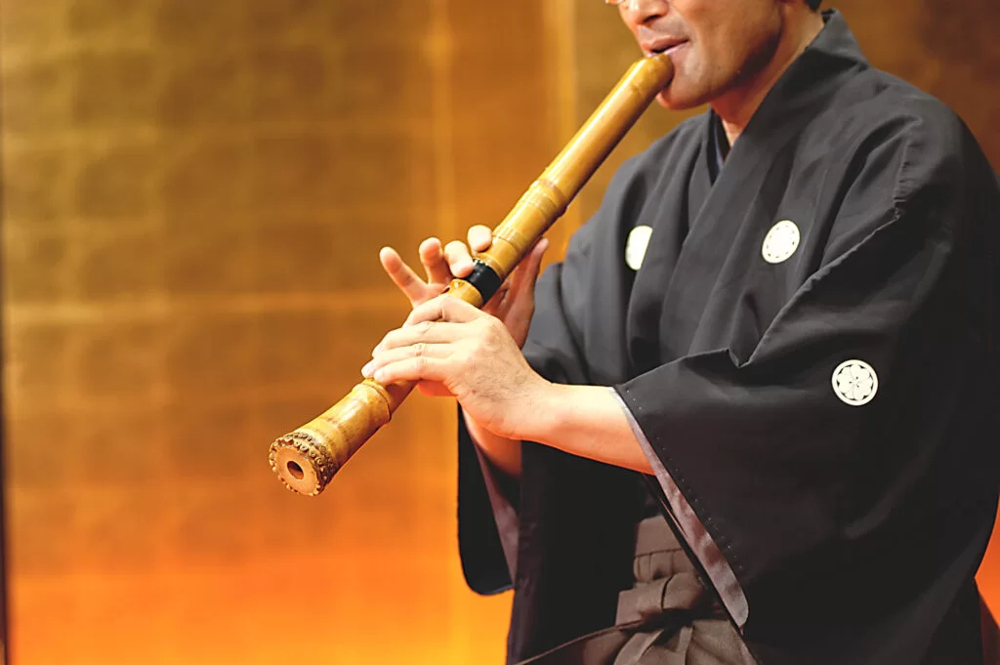
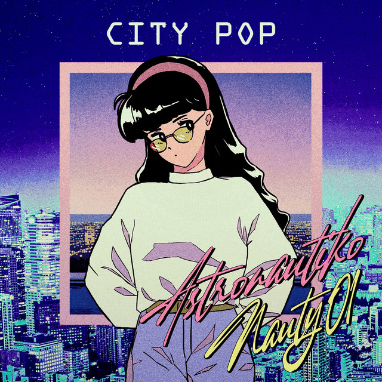
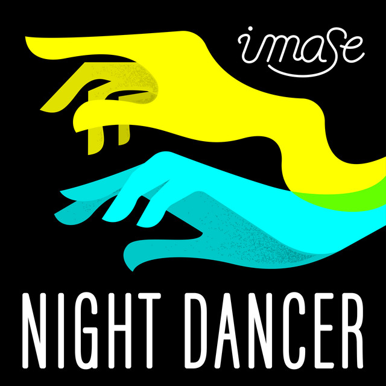
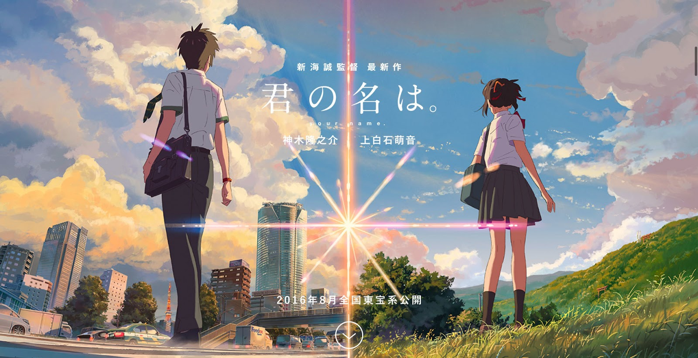

Seni & Musik
Selami keindahan karya rupa yang menangkap kefanaan dunia, dan klik pada gambar instrumen untuk mendengarkan gema melodi dari Jepang.
Kekayaan Seni Jepang (Bijutsu)
Enam pilar utama estetika Jepang yang membentang dari tradisi klasik yang meditatif hingga budaya pop modern yang mendunia.

1. Seni Rupa & Visual
Berfokus pada detail dan filosofi alam. Meliputi seni cukil kayu (Ukiyo-e), seni kaligrafi (Shodō), dan lukisan tinta gradasi (Sumi-e).

2. Kerajinan Tangan
Menghargai fungsi dan keindahan ketidaksempurnaan (wabi-sabi). Termasuk seni lipat kertas (Origami), perbaikan keramik dengan emas (Kintsugi), dan tembikar (Yakimono).
3. Seni Pertunjukan
Seni panggung teatrikal dengan riasan dan gerakan ketat. Terdiri dari teater tari (Kabuki), teater topeng (Noh), dan teater boneka (Bunraku).

4. Kehidupan & Alam
Estetika yang diintegrasikan ke aktivitas sehari-hari sebagai meditasi, seperti upacara minum teh (Sadō), merangkai bunga (Ikebana), dan pohon kerdil (Bonsai).

5. Seni Sastra
Terkenal padat, kaya makna, dan lekat dengan musim. Dikenal lewat puisi pendek 3 baris (Haiku) dan puisi klasik yang lebih panjang (Tanka).

6. Modern & Populer
Seni kontemporer Jepang yang mendominasi budaya pop global saat ini, berpusat pada novel grafis/komik (Manga) dan seni animasi (Anime).
Evolusi Nada (Ongaku)
1. Musik Tradisional Jepang (Hōgaku)
(Klik gambar untuk memutar cuplikan suara)

Gagaku
Musik istana kekaisaran kuno Jepang. Menggabungkan instrumen tiup kayu, senar, dan perkusi dengan tempo yang lambat dan sakral.

Min'yō (Lagu Rakyat)
Lagu daerah yang dinyanyikan oleh pekerja atau petani. Memiliki ketukan khas untuk mengiringi tarian dalam festival (Matsuri).
Shōmyō
Nyanyian ritual Buddha yang dibawakan tanpa iringan instrumen musik (akapela). Menjadi salah satu fondasi melodi tradisional Jepang.
2. Instrumen Karakteristik
Suara musik tradisional Jepang sangat dipengaruhi oleh instrumen-instrumen pembentuk jiwa berikut. (Klik gambar untuk mendengar):

Koto
Kecapi panjang dengan 13 senar yang dipetik menggunakan pelindung jari khusus. Suaranya sangat anggun dan elegan.

Shamisen
Instrumen petik berleher panjang. Suaranya nyaring dan bersemangat, sering digunakan dalam teater Kabuki.

Shakuhachi
Seruling bambu kuno. Menghasilkan suara yang mistis, dalam, dan menenangkan jiwa, sering digunakan untuk meditasi Zen.
Taiko
Drum besar yang dimainkan bertenaga dan ritmis, sering menjadi pemompa semangat utama dalam festival budaya Jepang.
3. Musik Karakteristik Modern Jepang
(Klik gambar untuk memutar cuplikan suara)
Enka
Pop retro pasca-perang dengan teknik vokal tradisional (kobushi). Tema lagunya melankolis, menceritakan kerinduan atau kampung halaman.

City Pop
Pop Jepang era 80-an yang menggabungkan jazz fusion, funk, dan disco dengan nuansa perkotaan modern yang santai.

J-Pop
Musik pop modern dengan struktur melodi yang kompleks dan progresi akor yang unik, khas industri musik Jepang.

Anisong (Anime Song)
Lagu tema animasi yang sangat variatif, mulai dari orkestra megah hingga rock distorsi dengan aransemen super dinamis.
Vocaloid EDM
Lagu yang memadukan vokal sintetis dengan ketukan Electronic Dance Music (EDM) yang dinamis, meliputi berbagai subgenre mulai dari house dan trance hingga hardcore.

J-Rock
Aliran ini menggabungkan instrumentasi musik rock Barat (seperti gitar elektrik dan drum) dengan melodi, lirik, atau elemen visual khas Jepang.